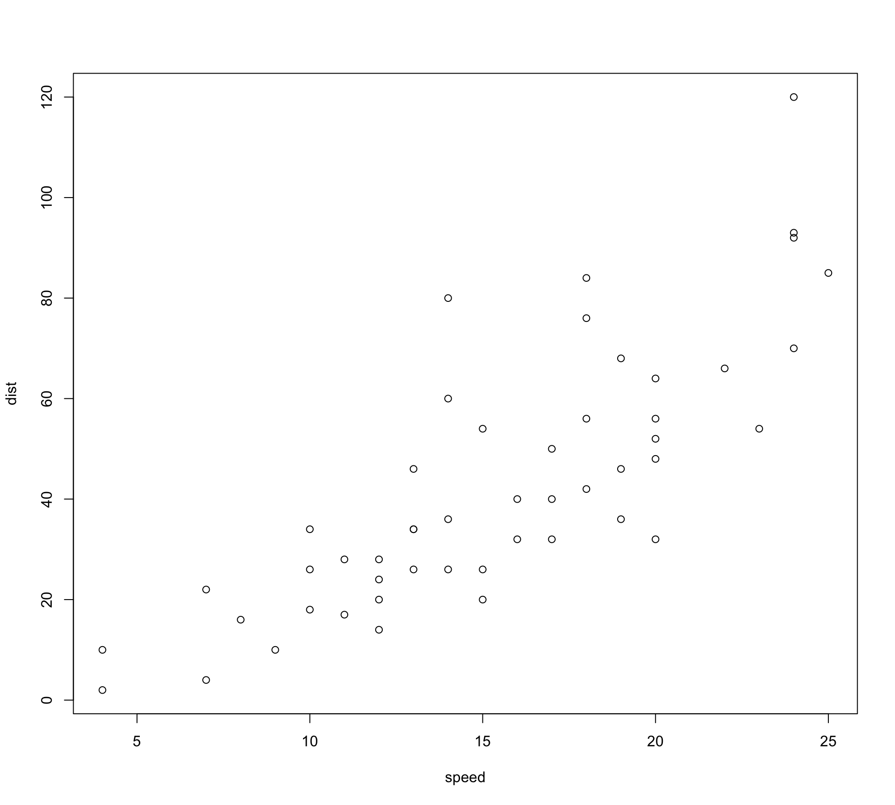
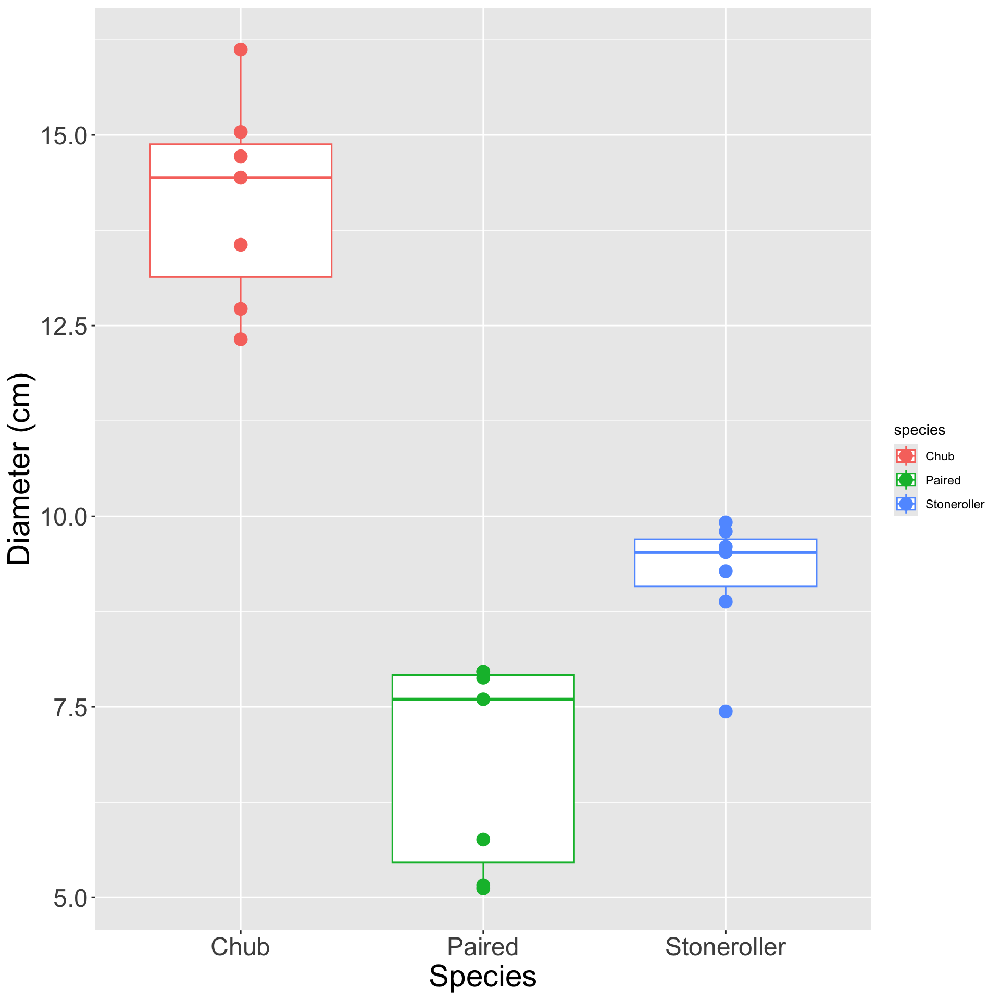
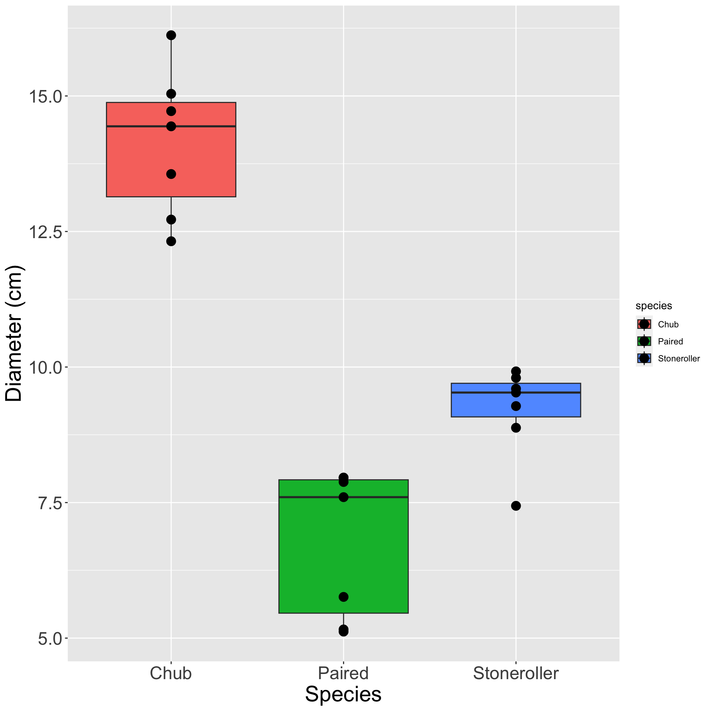
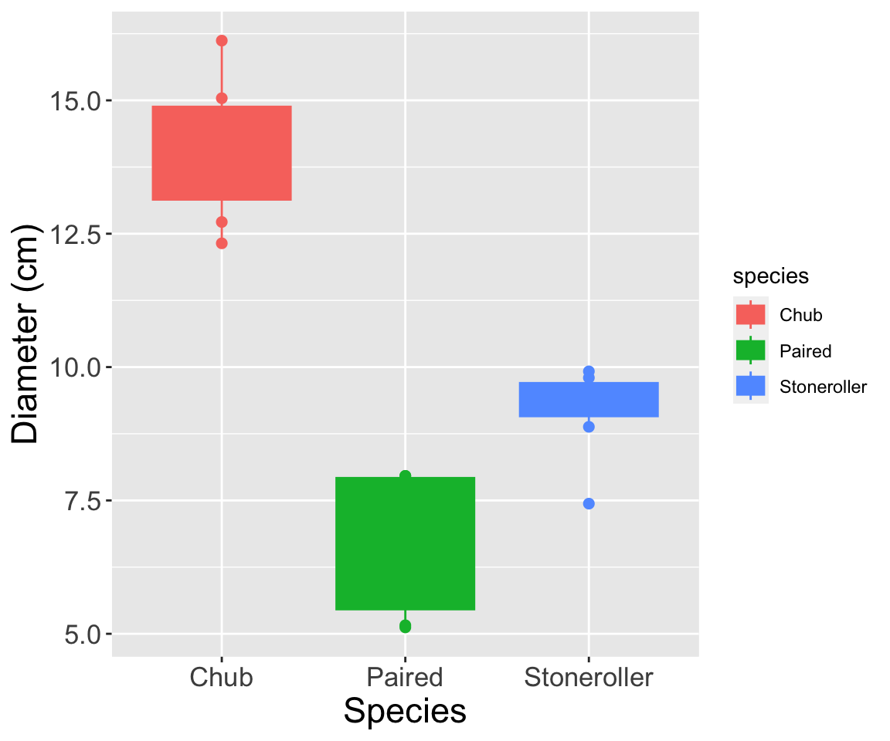

Intro to Data Science
Data Viz in R
Two main options for data viz in R:
Base R
ggplot2

Core ggplot2

- Get prepared for this practice
- Create a script for this week
- Download and read in the “minnow.csv” data
- Using
ggplot2, make a graph with the minnow data where:- Fish species is on the X axis
- Diameter of fish nest is on the Y axis
- What does the resulting graph look like?
Core ggplot2

Geometries
- Let’s practice adding geometries!
- Copy the code you wrote for the previous graph
- Add a
+to the end of the line - In the next line add
geom_point()
- What does that give you?
- Copy that code and change
geom_point()togeom_boxplot()- What do you have now?
Geometries


Temperature Check
How are you Feeling?

Multiple Geometries
- Make a graph with both
geom_boxplotandgeom_point- Add a
+after whichever you put first, then put the other
- Add a
- What happens if
geom_boxplotis first?
- Versus if
geom_pointis first?
Multiple Geometries


See how points are “behind” boxplots on the left?
Axis Labels
- Copy your code for the plot with:
- Both a boxplot and points
- Points in front of boxplots
- Use
labsto do do the following:- Capitalize “species” and “diameter”
- Put “cm” in parentheses on the y-axis
- What does that graph look like?
Axis Labels

Geometry Color
- Take the plot you created during the previous practice:
- What happens if you map color to species in the
aescall at the top?
- What happens if you map color to species in the
- Change
colortofill. Now what does the plot look like?
Geometry Color
color = species

fill = species

Geometry Color
- What happens if you map species to both
colorandfill?
- Try it and find out!
Geometry Color

Customizing Colors

Set Colors
- To the graph you made in the previous practice:
- Make species fill with custom colors
- Visit one of the sites I suggested to pick your colors
- Coolors (coolors.co/palettes/popular)
- Color Brewer 2.0 (colorbrewer2.org)
- What does that final plot look like?
Set Colors

Temperature Check
How are you Feeling?